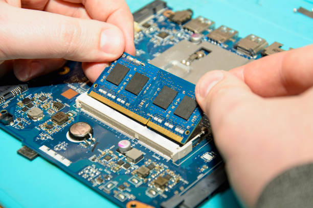

Summary of Qualifications
I am skilled in network technologies, including Active Directory and Linux, with a strong background in help desk support and project management. My expertise includes Ethernet, LAN, WAN, TCP/IP, HTML, CSS, and database systems, along with tools like Microsoft Visual Studio and WordPress. I excel in creating documentation, managing time effectively, and working both independently and in teams. With strong communication skills and a keen attention to detail, I am adept at optimizing IT equipment performance under pressure.
Education
Currently pursuing a diploma in Computer System Technician Information Technology & Infrastructure Services at Sheridan Institute of Technology & Advanced Learning, expected to graduate in August 2024. My coursework covers HTML, CSS, MS Access, SQL, Linux, and Windows. I am also skilled in using Microsoft Office 365, Visual Studio, WordPress, Cisco Packet Tracer, VMware, SQL Server, and project management tools.
Work Experience
Customer Service Representative
Enigma, Nepal
2018 - 2019
- Call Management: Managed call scheduling and coordination, ensuring timely and efficient handling of customer inquiries and support requests.
- Documentation: Handled letters and emails, maintaining accurate records of customer interactions and ensuring follow-up on outstanding issues.
- Customer Interaction: Engaged with customers, providing information and resolving issues, thereby enhancing customer satisfaction and loyalty.
IT Helpdesk
AOMES (Academy of Medical and Engineering Science), Nepal
February 2022 - August 2022
- Technical Assistance: Assisted with resolving IT device issues, including troubleshooting hardware and software problems, ensuring minimal disruption to the users.
- Network Management: Managed network configurations and performed routine maintenance tasks to ensure network stability and security.
- Software Utilization: Utilized Microsoft Word, PowerPoint, and Excel for documentation and reporting, creating comprehensive technical guides and user manuals.
- User Support: Provided exceptional customer service by assisting users with IT-related queries and problems, fostering a supportive and efficient work environment.
Jr. Technical Analyst (4 months Co-op)
Hydroform Martinrea, ON
May 2023 - August 2023
- First-level Support: Provided first-level technical support for desktops, VoIP phones, printers, and network issues via a ticketing system, ensuring quick resolution to minimize downtime.
- Onboarding Setup: Set up IT equipment for new hires, including desktops, laptops, and phones, to ensure a smooth onboarding experience, optimizing system configurations for enhanced performance.
- Equipment Upgrades: Upgraded laptops, phones, and other IT equipment for existing employees, significantly improving overall performance and operational efficiency.
- Documentation: Maintained and updated documented processes, procedures, and user-friendly instructions for end-users, contributing to the creation of a comprehensive IT knowledge base.
- Ticket Management: Documented and tracked support requests, ensuring timely resolution and effective communication with end-users.
- Inventory Management: Refilled and documented the IT inventory, managing asset records and tracking equipment. Maintained and requested purchase orders, tracked orders, and managed invoices for payment.
LCBO
Brampton
December 2023 - Present
- Order Management: Efficiently managed customer orders, ensuring accuracy and timely delivery.
- Team Collaboration: Demonstrated strong teamwork and communication skills, collaborating with colleagues to provide excellent customer service.
- Customer Engagement: Interacted with customers to understand their needs and preferences, providing personalized service to enhance customer experience.
Projects
Skills
- HTML, CSS, JavaScript, PHP
- MySQL, Microsoft SQL Server
- Network Technologies (Ethernet, LAN, WAN, TCP/IP)
- Operating Systems (Windows, Linux)
- Project Management
- Technical Documentation
- Customer Service and Communication